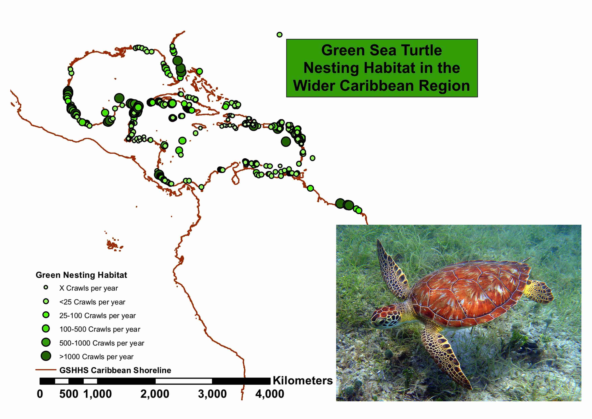
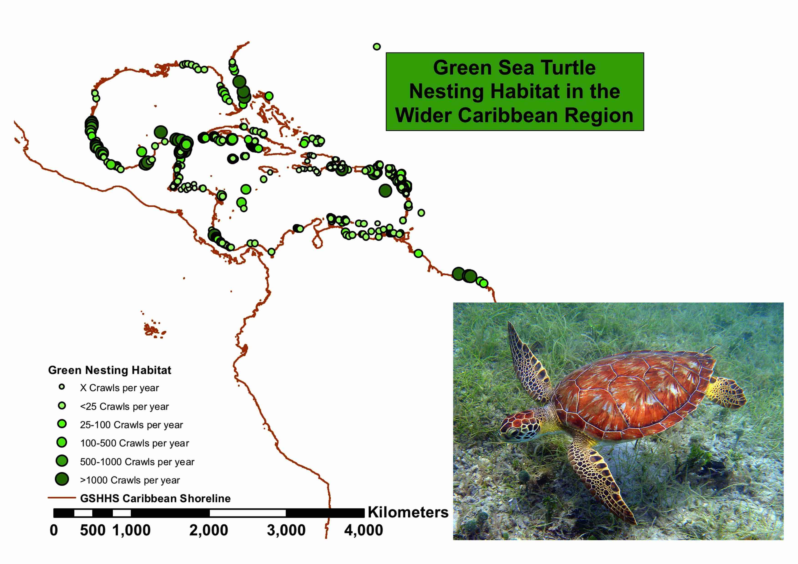
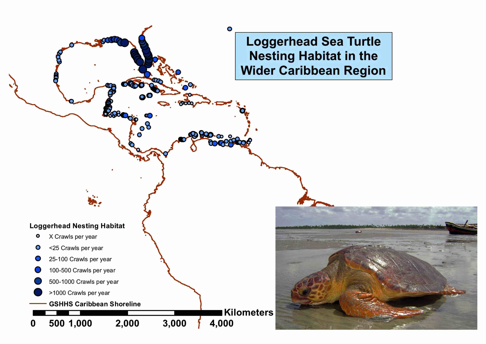
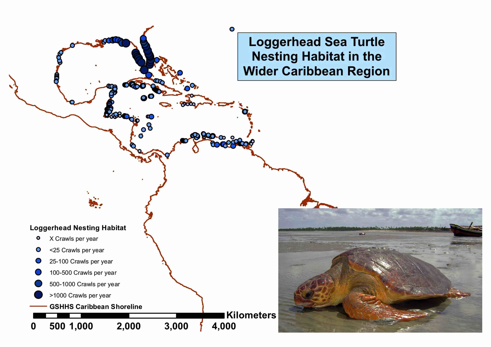

I.The Green Sea Turtle
The Green turtle is the most commonly sighted sea turtle in Sri Lanka. Also know as the green turtle,BLACK TURTLE or PACIFIC GREEN TURTLE. Is a species of large sea turtle of the family Cheloniidae.They are named after their green-coloured fat, and they can weigh up to 200 kilograms. The Green turtle may be found in various places of Sri Lanka, including the southern coast, the eastern coast, and the west coast. They are herbivores and mainly feed on sea grass and algae. During the nesting season, female Green turtles come ashore to lay their eggs on the beaches.
 

 
